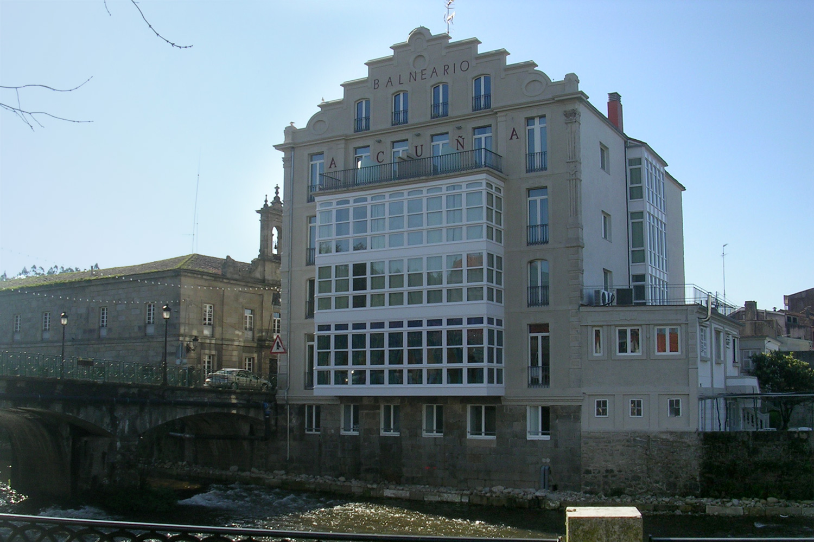
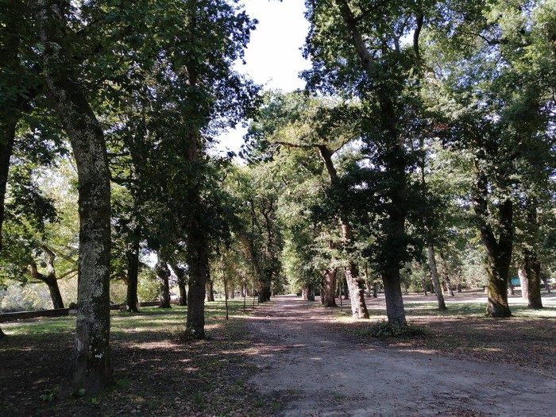
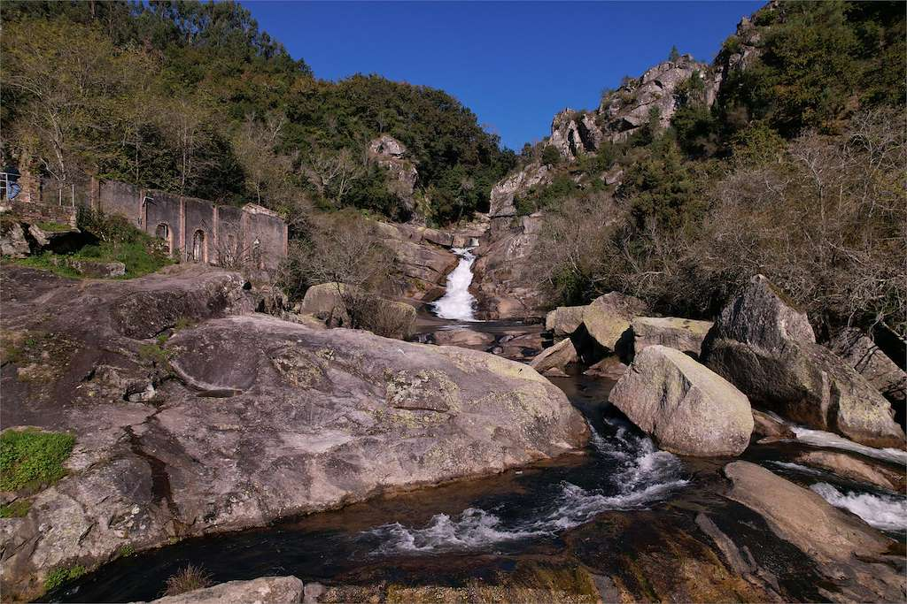
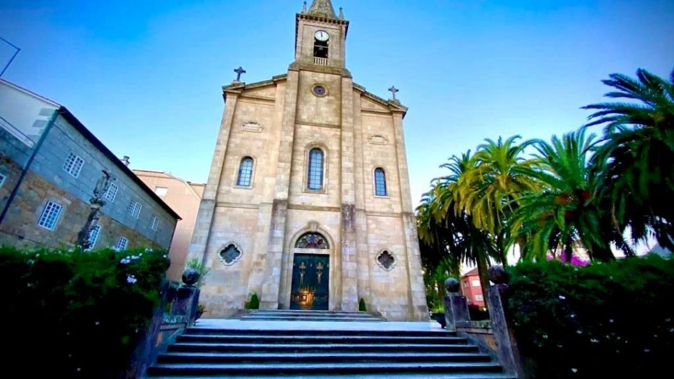
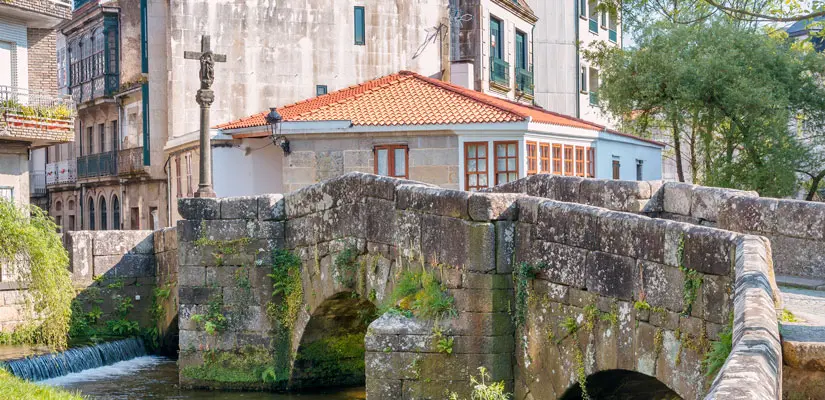

Un destino de aguas termales
Descubre Caldas de Reis, un lugar donde la naturaleza y las aguas termales se mezclan con historia y tradición gallega.
Qué puedes visitar
- Balneario Acuña
- Carballeira centenaria
- Cascada de Segade
- Iglesia de Santo Tomás Becket
- Puente romano
- Fonte das Burgas




